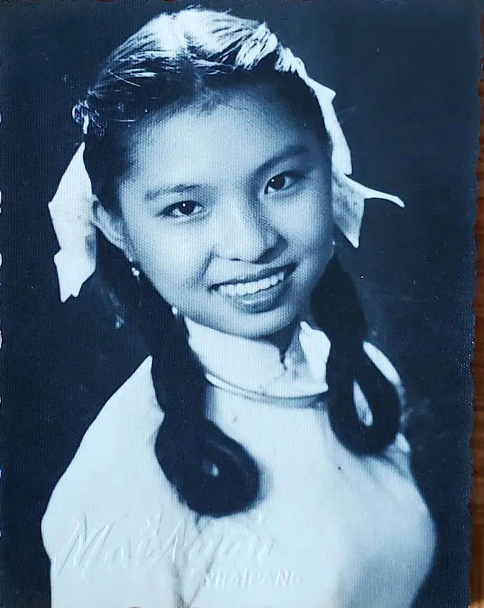
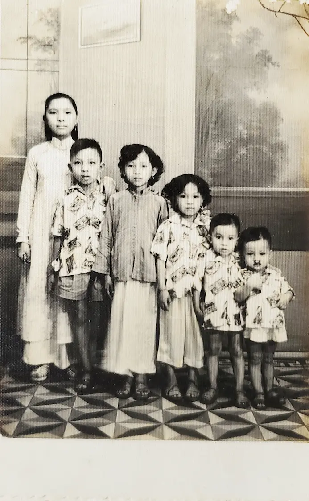
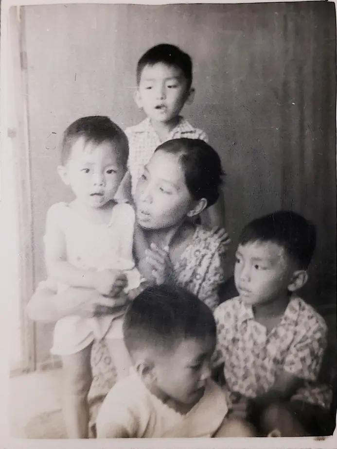
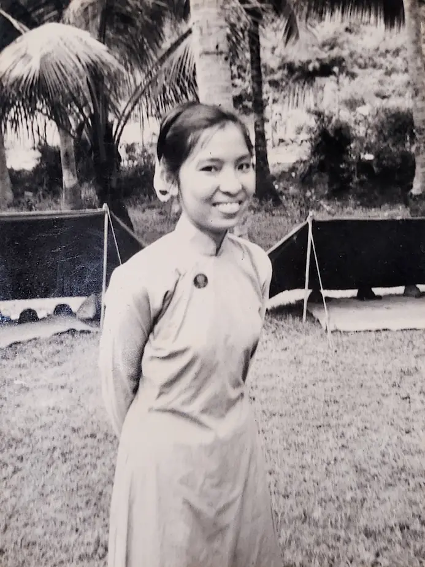

Ký ức đầu tiên về Mẹ

Ký ức đầu tiên của tôi về mẹ là một hình ảnh chưa bao giờ phai nhạt, dù khi đó tôi chỉ mới hơn ba tuổi. Đó là một đêm khuya — sự yên tĩnh chỉ có ở những ngôi nhà đang chìm sâu trong giấc ngủ. Khi mọi người đang say giấc, tôi thì mê sảng vì sốt cao, mẹ ngồi bên cạnh tôi, thức suốt đêm, nhẹ nhàng đắp chiếc khăn ướt mát lên trán tôi.
Ngay cả trong sự mông muội của tuổi thơ, tôi vẫn nhớ rõ khuôn mặt mẹ tôi. Ánh mắt đầy lo lắng — mệt mỏi, nhưng toàn tâm toàn ý đặt vào tôi. Đôi tay mẹ khẽ chuyển động chăm chút, như thể đang cầu mong căn sốt mau qua. Lúc đó tôi chưa hiểu gì về bệnh tật hay sự hy sinh, chỉ cảm nhận một điều mà sau này tôi biết nó có tên gọi là tình yêu. Tôi nhìn thấy tình cảm ấy trong mắt mẹ, và cảm nhận nó trong từng cái chạm mát lạnh.
Khoảnh khắc đó, dù nhỏ bé, đã ở trong tôi mãi. Đó là lần đầu tiên tôi biết mình an toàn — không phải vì tôi mạnh mẽ, mà vì có một người mạnh mẽ hơn luôn ở bên tôi..
Lần Đầu Tôi Thấy Mẹ Giận

Khi đó tôi chỉ khoảng hai hay ba tuổi — còn quá nhỏ để ý thức mọi việc xảy ra quanh mình. Nhưng tôi vẫn nhớ rất rõ cái ngày ấy vì tôi đã nhìn thấy ở mẹ tôi một khía cạnh mà trước đấy tôi chưa từng chứng kiến. Thời gian ấy, mẹ phải ra chợ bán bán quần áo về, giao tụi tôi cho bà ngoại giữ. Hôm ấy ở nhà xảy ra chuyện khiến mẹ phải bỏ hàng chạy vội về nhà.
Chuyện là các ông anh tôi đã nghịch diêm. Vô tình đã bén lửa thủng tấm ga giường, làm cháy thành một lỗ lớn và suýt gây ra tai vạ thực sự.
Khi mẹ vừa về đến nhà, tôi nhớ khuôn mặt mẹ đầy nỗi lo và giận dữ. Mẹ lớn tiếng la lối các anh. Đó là lần đầu tôi thấy mẹ hét lớn tiếng như vậy. Tôi không hiểu bọn tôi đã sai điều gì, nhưng tôi nhớ rõ cảm xúc ấy trên gương mặt mẹ tôi. Mẹ tôi quá choáng váng.
Mẹ đuổi chúng tôi ra ngoài ngoài đường: “Đi hết đi! Đi ra khỏi nhà! Đừng có về nữa!”. Tôi nhớ anh cả đã cõng tôi trên lưng, âm thầm khóc. Hai anh còn lại đi bên cạnh, bình thản một cách quái lạ. Chúng tôi vòng quanh cả khối nhà cả buổi cho đến khi bà ngoại ra gọi chúng tôi vào.
Dù còn nhỏ, tôi đã biết chuyện nghiêm trọng lắm rồi. Kỷ niệm đó ở lại với tôi — không phải vì mẹ giận, mà vì đó là lần đầu tôi nhận ra tình yêu của mẹ luôn đi kèm nỗi sợ, trách nhiệm và gánh nặng mẹ tự đặt cho minh để bảo vệ đàn con khỏi những hiểm họa khôn lường trên đường đời.
Chuyến Tàu Thăm Cha

Một trong những ký ức rõ nét nhất của tôi là chuyến đi thăm cha khi cha bị giam trong trại cải tạo, một tù binh chiến tranh sau ngày miền Nam thất thủ. Lúc đó tôi chỉ còn nhỏ xíu, và dù hoàn cảnh ảm đạm, tôi vẫn nhớ rõ sự háo hức khi chuẩn bị cho chuyến đi.
Chúng tôi sẽ được đi tàu hỏa — một điều hiếm hoi và kỳ diệu đối với lũ trẻ chúng tôi. Mẹ đã phải thức suốt đêm trước, chuẩn bị món ăn đơn giản cho chuyến hành trình: món cơm vắt, món ăn chỉ có cơm trắng nén chặt trong lon gi-gô, ăn với muối tiêu.Nhưng đối
với bọn trẻ con chúng tôi, đó là một món đặc sản.
Chuyến tàu khởi hành vào ban đêm. Lúc đầu, chúng tôi náo nhiệt, háo hức với hành trình và món ăn. Nhưng khi đoàn tàu lăn bánh, chúng tôi dần lặng xuống. Lần lượt, chúng tôi nằm mình trên sàn gỗ của khoang tàu, bốn đứa trẻ nằm san sát bên nhau, được ru vào giấc ngủ bởi tiếng kình kịch của bánh tàu.
Còn mẹ tôi thì không hề chợp mắt. Vì không có chỗ ngồi và sàn tàu đông người, mẹ thức nguyên đêm, trông chừng chúng tôi, khẽ che chắn để không ai vô tình dẫm lên những đứa con đang ngủ say.
Thực ra mỗi chuyến đi là một hành trình gian khổ, nhưng để tiếp tế cho cha tôi, mẹ đã phải đi như vậy không không biết bao nhiêu làn suốt bốn năm liền — kiên định, âm thầm và tận tâm giữ gìn và bảo vệ cho gia đình.
Khi đó tôi chưa hiểu hết ý nghĩa của sự hy sinh, nhưng bây giờ, tôi biết đó chính là tình yêu ở hình thức mãnh liệt nhất.
Đạp Xe Thăm Nội

Có một ký ức luôn trỗi dậy trong tôi mỗi khi thấy ai đó vất vã khi đạp xe. Ký ức ấy đưa tôi trở về những năm cha tôi bị giam trong trại cải tạo, khi ấy chúng tôi ở nhà ngoại. Dù gánh trên vai bao nặng nề, mẹ tôi vẫn cố gắgn tạo điều kiện cho chúng tôi gìn giữ mối quan hệ với ông bà nội.
Mỗi tuần, như một nghi thức, chúng tôi lại lên đường thăm nhà nội. Chặng đường dài khoảng bốn cây số. Ban đầu đường còn trải nhựa, nhưng càng đến gần nhà nội đường càng xấu đi, cát lún khắp nơi khiến hành trình càng thêm khó khăn.
Vậy mà mẹ tôi vẫn thực hiện chuyến đi đó đều đặn hầu như mỗi tuần. Mẹ không đi một mình mà chở theo cả bốn đứa con trai — hai đứa ngồi trước, hai đứa ngồi sau yên xe. Đây không chỉ là bài toán giữ thăng bằng, mà còn là thử thách về kiên nhẫn và sức lực. Trẻ con vốn hiếu động — chúng tôi cũng không ngoại lệ. Có lúc hai anh em ngồi trước cãi nhau chí chóe, lúc khác hai đứa ở sau lại xảy ra màn đánh nhau riêng. Thỉnh thoảng, cả hai đầu xe cùng hỗn loạn một lúc.
Khi ấy tôi còn quá nhỏ để nghĩ đến khó khăn mẹ phải chịu — phải vượt qua cát lún, nắng gắt, tiếng ồn và tiếng la hét của đàn con. Giờ khi lớn lên, nhiều khi tôi vẫn tự hỏi: làm sao mẹ làm được như vậy? Không chỉ một hai lần, mà tuần nào cũng vậy, năm này qua năm khác?
Tôi không có câu trả lời chính xác. Nhưng có lẽ, đó chính là tình yêu thầm lặng và kiên định của mẹ, đã cho mẹ sức mạnh đưa chúng tôi đến thăm nội mỗi tuần.
Lần Đầu Tôi Bị Ăn Đòn

Khi đó tôi khoảng bảy, tám tuổi — lần đầu tiên mẹ tôi đánh tôi. Tôi không nhớ chính xác vì sao ngày hôm ấy tôi lại bỏ chạy nhà khỏi nhà. Có thể chỉ là chứng bướng bỉnh trẻ con, hoặc một hiểu lầm mà tôi không còn nhớ rõ. Nhưng tôi ghị nhớ rất rõ khoảnh khắc khi tôi bị bắt đưa về.
Khi tôi vừa bước chân qua cửa, mẹ vớ ngay cây chổi quất lấy quất để. Vừa đánh mẹ vừa mắng: “Chừa chưa? Còn dám bỏ nhà đi nữa không!” Giọng mẹ run run một cách kỳ lạ không biết vì tức giận hay sợ hãi. Lúc ấy tôi chỉ gào khóc phần vì đau phần vì sợ, nhưng trong một thoáng bất ngờ tôi chợt nhận ra tôi không phải người duy nhất rơi nước mắt. Trong khoảnh khắc ngắn ngủi, tôi bắt gặp nước mắt lăn trên má mẹ trong lúc mẹ không ngừng đánh tôi.
Khi đó tôi không tài nào hiểu được cảm xúc của mẹ, nhưng cho đến có con của riêng mình, tôi mới nhận ra đó không phải là cơn thịnh nộ. Đó là tình yêu ở hình thức thô ráp nhất — nó trộn lẫn nỗi sợ hãi và tính thương. Mẹ không đánh tôi để hã cơn giận mà chỉ muốn chắc chắn rằng mẹ sẽ không phải chịu nỗi kinh hoàng khi đánh mất con mình thêm lần nữa.
Chơi Dại

Ngày ấy, tôi khoảng tám, chín tuổi. Anh tôi và tôi có một chuyến phiêu lưu vừa mạo hiểm vừa dại dột. Lúc đó khoảng giữa trưa, bọn tôi trèo lên mái nhà hàng xóm để hái trộm trái cây thoàng xuống mài nhà. Sau khi ăn no nê, tôi cảm thấy “mắc ị” — không suy nghĩ nhiều, tôi đi đại ngay từ mái nhà, mà không biết định mệnh trớ trêu đang chờ đợi mình.
Ngay khi cục cuối rơi xuống đất, chủ nhà và anh con rể vừa về đến, ngước lên bắt gặp hai thủ phạm trên mái nhà. Tiếp theo là mà la hét, chửi bới của ông chủ nhà. Ông con rể hăng hái chứng tỏ với cha vợ, trèo lên mái hòng bắt chúng tôi. Nhưng anh chàng đã đánh giá thấp khả năng linh hoạt của lũ trẻ hay leo trèo tường và chơi trên mái nhà hàng ngày. Chúng tôi nhảy từ nhà này sang nhà khác, vừa cười khúc khích vừa thở hổn hểnh vì khích động mạnh. Chẳng mấy chốc, tụi tôi cho anh chàng hửi khói vì không dám nhảy chuyền nóc nhà.
Không hã giận, anh thanh niên xông đến nhà chúng tôi, hậm hực kể toàn bộ sự việc cho mẹ, hòng mong đợi xem bọn tôi sẽ bị trừng phạt thế nào. Chúng tôi nấp trong nhà, chờ đợi cơn thịnh nộ.
Thay vì la mắng chúng tôi, mẹ quay sang anh hàng xóm, bình tĩnh nhưng nghiêm nghị, hỏi: “Anh nghĩ gì khi đuổi theo trẻ con trên mái nhà như vậy? Rũi nó té xuống thì sao?” Giọng mẹ không khoan nhượng — đó là thái độ bảo vệ, đầy uy lực. Anh hàng xóm bối rối lắp bắp vài tiếng rồi lủi đi. Dĩ nhiên, chúng tôi vẫn bị phạt đòn, nhưng tôi chẳng còn nhớ tí gì về trận đòn ấy.
Điều tôi nhớ rõ là khoảnh khắc nhận ra mẹ sẽ luôn đứng ra bảo vệ chúng tôi trong cuộc đời, ngày cả khi chúng tôi sai. Mẹ là người che chở — dũng cảm, thông minh, và luôn đặt an toàn của con lên hàng đầu, dù chúng tôi có ngốc nghếch đến đâu.
Khoảnh Khắc Tôi Tự Hào

Một trong những kỷ niệm ấm áp nhất với tôi là lời mẹ nói vô cùng nhẹ nhàng, nhưng in đậm trong lòng. Lúc ấy, mẹ đang tán gẫu với một người thân, và khi nói đến tôi — mẹ không phải trách móc hay than phiến, mà mẹ với một nụ cười dịu dàng mẹ nói câu này.
“Nó hay kể chuyện tào lao làm mình cười ngã ngữa. Giống như trong chuyện người ta kể có ông vua nghe chuyện cười, ôm bụng cười rồi lăn quay ra chết. Lúc nào mệt mà nghe nó kể chuyện cũng thấy quên cả mệt luôn.”
Khi đó tôi còn quá nhỏ để hiểu ý nghĩa sâu xa câu nói ấy. Nhưng nhìn lại, tôi mới nhận ra điều đó quý giá đến thế — được là ánh sáng của mẹ trong những giờ phút đen tối, mang lại tiếng cười cho mẹ khi đời chỉ có buồn khổ. Khoảnh khắc ấy khiến tôi tự hào về chính mình đối với mẹ. Tôi không chỉ là con của mẹ — tôi còn là niềm vui, là tiếng cười, là nguồn an ủi của mẹ.